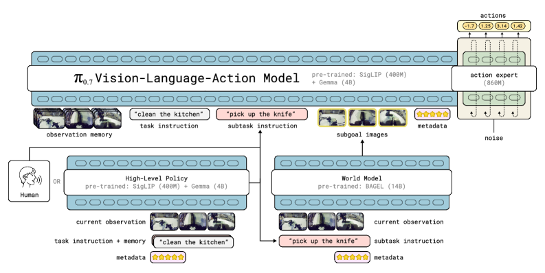
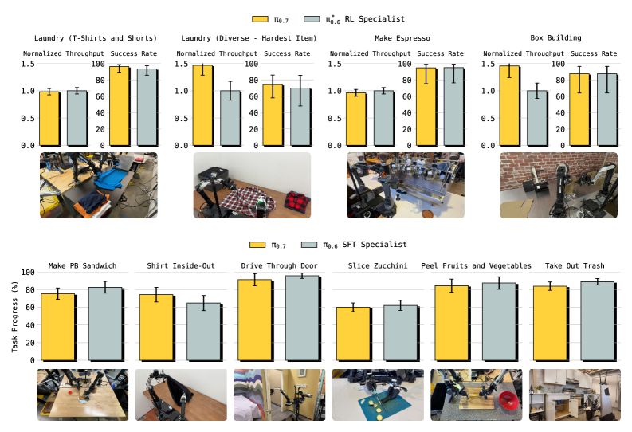

"무엇을 하라"는 언어 지시뿐 아니라 어떻게·어떤 전략으로 수행할지를 알려주는 다양한 멀티모달 맥락(diverse context conditioning)을 학습에 함께 조건화한 로봇 파운데이션 모델. 이 맥락 조건화 덕에 데모·자율수집 실패데이터·인간영상·웹데이터 같은 이질적·저품질 데이터를 충돌 없이 한 모델에 흡수할 수 있다. 그 결과 파인튜닝 없이(out-of-the-box) 에스프레소 머신 조작·빨래 개기 같은 고난도 조작을 RL 전문가 정책(π0.6*) 수준으로 수행하고, 새 주방·침실에서의 지시 추종, 학습에 없던 embodiment로의 제로샷 전이(셔츠 접기 80% 성공), 그리고 조합적 일반화(compositional generalization)의 첫 신호를 보인다.
범용 로봇 파운데이션 모델을 키우려면 데이터를 대량·다양하게 모아야 하지만, 실제 데이터는 품질과 전략이 제각각이다. 고품질 데모, 실수를 포함한 성공 에피소드, 자율 rollout의 실패, 인간 영상, 웹 데이터가 뒤섞여 있고 로봇·제어모드·속도도 다르다. 단순히 언어 지시 하나로만 조건화해 이 모든 데이터를 학습하면 서로 모순되는 신호가 되어 성능이 오히려 떨어진다(저품질 데이터를 더할수록 나빠짐).
π0.7의 핵심 통찰은, 각 에피소드가 "무엇을" 했는지뿐 아니라 "어떤 방식·품질·전략으로" 했는지를 함께 조건화하면, 모델이 데이터 간 차이를 혼동이 아니라 구분해야 할 맥락으로 이해한다는 것이다. 추론 시에는 원하는 맥락(고품질·빠르게 등)만 지정하면 그 전략을 골라 실행할 수 있어 steerable해진다.
총 ≈5B 파라미터. Gemma3로 초기화한 4B VLM 백본 + 400M 비전 인코더(최대 4개 카메라 뷰, 각 6프레임 히스토리, 448×448) + 860M action expert. action expert는 flow matching 목적으로 연속 action 청크를 생성한다. proprioceptive 상태는 토큰화(디스크리트화) 대신 선형 사영으로 임베딩. 관찰/골 이미지 토큰은 양방향, 텍스트 토큰은 causal인 block-causal 마스킹을 사용.
학습 시 각 요소를 확률적으로 드롭아웃(서브골 25%만 사용, 메타데이터 15% 전체 드롭 등)해 추론 시 일부만 주어져도 동작하도록 함.
학습 데이터는 (1) 다수 플랫폼 로봇 데모(양팔 모바일·정적 양팔·UR5e), (2) 이전 모델(π0.6*) 평가에서 나온 자율 rollout, (3) 1인칭 인간 영상, (4) 웹 규모 비로봇 데이터(객체 위치·VQA·비디오 캡션), (5) 오픈소스 로봇 데이터로 구성. 실수를 포함한 저품질·실패 에피소드까지 그대로 포함하되, 메타데이터로 품질을 명시해 모델이 구분 학습하도록 한다.
Knowledge Insulation: VLM 백본은 FAST 토큰으로 지도하고, action expert의 gradient는 백본으로 역전파하지 않는다. Real-Time Action Chunking(RTC)로 0–12 스텝 지연을 시뮬레이션. flow matching 5 denoising 스텝으로 50스텝 action 청크를 생성하고 실행은 15–25스텝. 추론 시 서브골/서브태스크는 비동기 스레드로 생성하고, 메타데이터에 Classifier-Free Guidance(β∈{1.3,1.7,2.2})를 적용, 서브골은 Δ=4초마다 또는 의도 변화 시 갱신.
| 태스크 | π0.7 (파인튜닝 없음) | 비고 |
|---|---|---|
| 에스프레소 머신 | 전문가 수준 | RL 특화 정책과 대등 |
| 빨래 개기 | 전문가 수준 | 처리량(throughput) 더 높음 |
| 박스 조립 | 전문가 수준 | 처리량 더 높음 |
| 채소 껍질 벗기기·쓰레기 처리·셔츠 뒤집기 | 전문가와 대등 | 태스크별 파인튜닝 없이 |
단일 태스크에 RL로 특화한 π0.6* 정책과 대등하거나 처리량 우위. 혼합 데이터 학습만으로 전문가 능력을 사실상 distillation.
미학습 주방 4곳·침실 2곳의 14개 시나리오, 3–6단계 지시 시퀀스에서 π0.7은 π0.5·π0.6을 전반적으로 크게 상회하며 높은 절대 성공률을 달성. 복잡한 지시·참조 표현, 그리고 학습 편향에 반하는 지시(예: 접시를 쓰레기통에 넣기)에서도 유의하게 개선되며, 특히 역방향 태스크에는 서브골 이미지 조건화가 결정적이었다.
| 주체 | Task Progress | Success Rate |
|---|---|---|
| π0.7 (제로샷, 미학습 embodiment) | 85.6% | 80% |
| 전문 원격조작자(10명, 평균 375h) | 90.9% | 80.6% |
경량 정적 양팔 로봇에서 수집한 데이터로 학습해 더 큰 UR5e에서 테스트. 소스 행동을 그대로 모사하지 않고 대상 embodiment에 맞는 새로운 파지 전략을 스스로 발견 — 인간 전문가와 대등한 진행도. 물체 재배치(가방·셔츠 담기)에서도 π0.5는 크게 저하되나 π0.7은 성능 유지·상회.
학습 데이터가 전혀 없는 단기 태스크 — 밥통에 쌀 퍼담기, 기어세트·선풍기 등 회전, 천으로 물체 닦기 — 를 제로샷으로 수행. 에어프라이어·베이글 굽기·쓰레기 처리 같은 장기 다단계 태스크는 언어 코칭으로 훨씬 효과적으로 유도되고, 코칭 에피소드로 학습한 상위 정책은 추가 원격조작 없이 자율 실행으로 전환된다.


Fig. 9: 미학습 주방·침실 14개 시나리오 지시 추종 · Fig. 15–16: 장기 태스크 코칭 → 자율 전환 · Fig. 17: 제로샷 조합적 일반화 태스크.
아직 추가 질문이 없습니다. 이 논문에 대해 더 궁금한 점을 물어보시면 답변을 여기에 정리해 추가합니다.